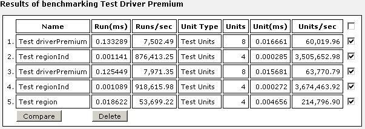

Unit tests are used in OpenL Tablets to validate data accuracy. OpenL methods with predefined input data compare the test results with expected results. Every decision table can be accessed as an OpenL method. The method signature is included in the header of a decision table. Each unit test is stored in a separate table.
For example, in the following diagram, the table on the left is a decision table but the table on the right is a unit test table that tests data of the decision table:
OpenL Web Studio supports visual controls for creating and running project unit tests. Unit test tables can be modified like all other tables in OpenL Web Studio. For information on modifying a table, see Modifying Tables. Test results are displayed in a simple format directly in the user interface.
To run unit tests, the following methods can be used:
|
Methods for running unit tests |
|
|---|---|
|
Method |
Description |
|
Execute all project tests at once |
System automatically executes all test runs in every unit test in project and displays a summary of results.
To run all project tests, in rule editor, above the module tree, click Run All Tests Test results resemble the following: 
Failed tests are represented by the |
|
Execute all tests for a single decision table |
System executes all test runs for one particular decision table.
To execute all test runs for one particular decision table, in rule
editor, in the module tree, select the decision table and, in the upper
part of the right pane, click
Test Test results resemble the following:

Failed tests are represented by the |
 .
.
 mark. Passed tests are represented by the
mark. Passed tests are represented by the  mark.
mark.